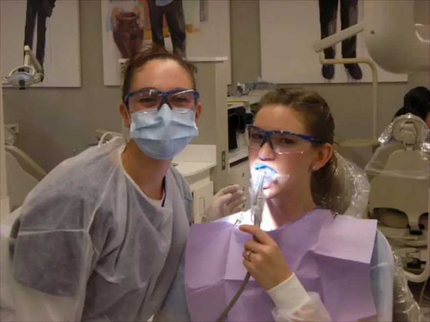
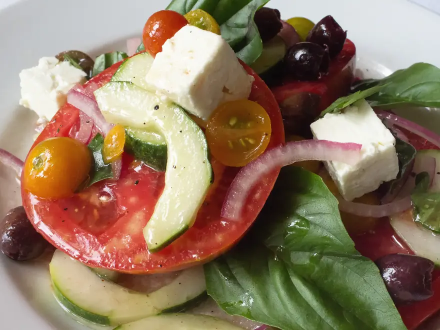
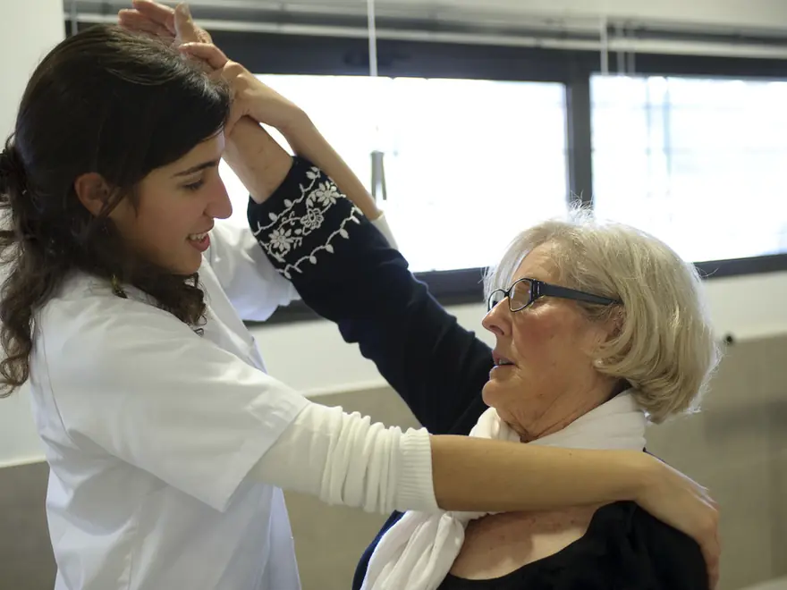
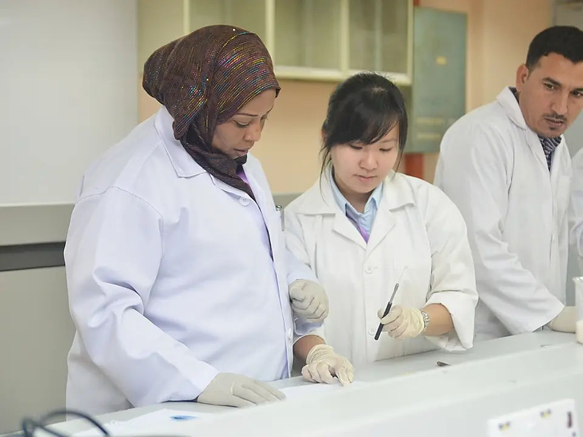
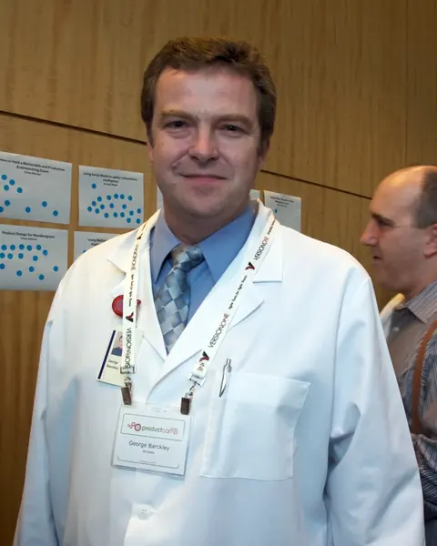

دکتر نگار فرهمندمتخصص پوست، مو و زیبایی
نوبت خالی بعدیامروز · ۱۷:۴۵
رزرو
پذیرش امروز تا ساعت ۲۱ باز است
۲۸ پزشک متخصص در ۱۲ رشته، زیر یک سقف و با یک پروندهی مشترک. نوبت آنلاین کمتر از یک دقیقه طول میکشد و یک روز قبل پیامک یادآوری میگیرید.
کلینیک اورژانس ندارد. در موارد فوری مثل درد قفسهی سینه یا تنگی نفس، همین حالا با ۱۱۵ تماس بگیرید.
وضعیت نوبت شماشنبه ۵ مهر
خدمات کلینیک
پروندهی شما بین همهی پزشکان کلینیک مشترک است. لازم نیست سابقه و جواب آزمایشها را هر بار از اول توضیح بدهید.
درمان آکنه و لک، لیزر موهای زائد، بوتاکس و فیلر؛ همه با معاینه و تجویز متخصص پوست.

۴ پزشکترمیم، عصبکشی، ایمپلنت و ارتودنسی، با رادیوگرافی دیجیتال در همان طبقه.
چکاپ سالانه با آزمایش خون و نوار قلب در یک نوبت صبحگاهی؛ جوابها همان روز.
مراقبتهای دوران بارداری، سونوگرافی و مشاورهی باروری با پزشک زن.

۳ پزشکبرنامهی غذایی بر اساس آزمایش خون و سبک زندگی خودتان، نه یک نسخهی کپیشده.

۶ درمانگردرمان دردهای گردن، کمر و زانو، همراه با برنامهی تمرینی که در خانه هم ادامه میدهید.
یک مراجعه در ساسان
سه قدم که هر بیمار طی میکند. هر قدم را طوری چیدهایم که کمترین انتظار و بیشترین وقت با پزشک را داشته باشید.
کد پیگیری را به پذیرش طبقهی دوم نشان میدهید و مستقیم به اتاق انتظار میروید. پروندهتان از قبل آماده است و لازم نیست فرمی پر کنید.
هر ویزیت دستکم ۲۰ دقیقه وقت دارد. پزشک سابقه، آزمایشها و داروهای قبلیتان را جلوی چشم دارد و برای سؤالهایتان عجله نمیکند.

آزمایشگاه در همان ساختمان است. جوابها در پروندهی آنلاین ثبت میشود و اگر چیزی نیاز به توجه داشته باشد، پزشک خودش تماس میگیرد.
پزشکان
همهی پزشکان بورد تخصصی دارند و حداقل دو روز در هفته در کلینیک هستند. نوبت هر پزشک را مستقیم از کارت خودش بگیرید.
پوست، مو و زیبایی
متخصص پوست، عضو انجمن درماتولوژی ایران

۹ سال سابقهپوست، مو و زیبایی
فلوشیپ لیزر و جوانسازی پوست
دندانپزشکی
متخصص ارتودنسی کودکان و بزرگسالان
داخلی و چکاپ
متخصص بیماریهای داخلی
زنان و مامایی
متخصص زنان و زایمان
تغذیه و رژیم درمانی
متخصص تغذیهی ورزشی و بالینی
عکسها نمونهاند و افراد در آنها پزشکان ساسان کلینیک نیستند.
نظر بیماران
فقط بیمارانی که ویزیت شدهاند میتوانند نظر بدهند. نظرها ویرایش نمیشوند؛ اینها چند نمونهاند.
دکتر فرهمند برای آکنهی پسرم برنامهی سهماهه نوشت و هر مرحله را توضیح داد. بعد از دو ماه تفاوت کاملاً معلوم بود.
نوبت را ساعت ۱۱ شب گرفتم و فردا ۹:۳۰ ویزیت شدم. هیچکس پشت تلفن معطلم نکرد.
برای ایمپلنت دو جای دیگر هم رفته بودم. اینجا اولین جایی بود که قبل از هر کاری عکس و هزینه را کامل نشانم دادند.
پارکینگ شلوغ بود، ولی خود ویزیت عالی بود. دوران بارداری هر بار با همان پزشک و همان پرونده جلو رفتیم.
فیزیوتراپی کمرم با تمرینهایی که در خانه انجام میدادم ادامه پیدا کرد. بعد از شش جلسه دیگر مسکن نمیخورم.
رژیمم بر اساس آزمایش خون خودم نوشته شد، نه یک برگهی کپیشده. در سه ماه هفت کیلو کم کردم.
پدرم ۷۸ سال دارد. پذیرش ویلچر آورد و مسیر آسانسور تا اتاق پزشک خیلی راحت بود.
جواب آزمایش همان روز در پروندهی آنلاین آمد و دکتر خودش زنگ زد و توضیح داد.
نوبتدهی آنلاین
ساعتهای خالی مستقیم از تقویم پزشکان خوانده میشود. تا ۳ ساعت قبل از نوبت میتوانید بدون هزینه لغوش کنید.